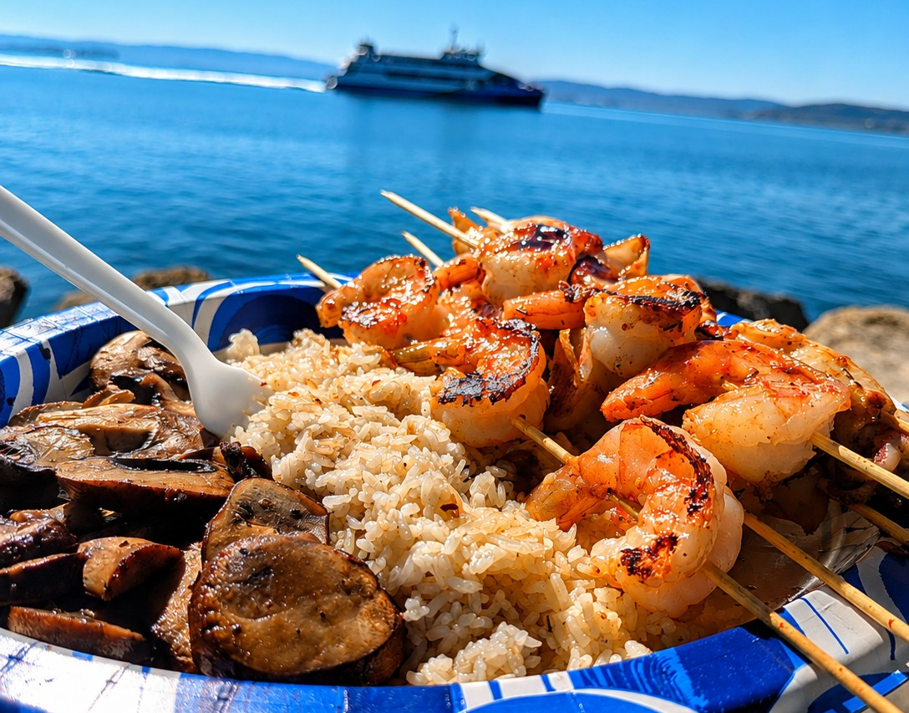

The Prawns Had to Travel
Food Investigation · Road to Kisumu Series
I broke my own future restaurant's philosophy on a spreadsheet in California before the building even exists. The dish is firecracker shrimp with cassava fries and kachumbari. Heat, crunch, and acid, a small collision of flavors on one plate. I liked it enough to write it onto the opening menu for a farm-to-table bar and grill that will sit on the shores of Lake Victoria in Kisumu. Then I started pricing it, and the prawns turned out to be the problem.
I had pictured them coming out of the water the restaurant will look out over, but they don't live there. The prawns that dish will need come from Kenya's coast, and Kisumu is roughly 830 to 840 kilometers from Mombasa by road. That's most of the length of the country, for an ingredient I had assumed was a local one, on a menu whose entire argument is that it belongs to the place it sits. So the farm-to-table concept didn't have to wait for my arrival to break. It broke before I even left the States.
I can't even give you a clean price for prawns in Kisumu, because there isn't one. Dried shrimp, wholesale product, fresh prawns and restaurant portions all sit at wildly different numbers, and pretending otherwise would be inventing precision I don't have. What I can say is when you find prawns on a menu, they sit at the top. In Nairobi they turn up curried, grilled, tandoori style, in biryani rice, drizzled in coconut sauce, or as king prawns priced like a special occasion. Restaurant menus in Kisumu list them too, prawns in pink sauce, chilli prawns, grilled lobster with jumbo prawns and more. Each one of those dishes is priced well above what the same restaurant charges for fish that came out of the lake that morning, and in most cases by several times.
That doesn't prove prawns are an everyday food in Kisumu. It proves something more interesting. There is already a market for them. People living beside Africa's largest freshwater lake are already ordering an ingredient that travels most of the country's length to reach their plate. Which makes my firecracker shrimp less strange than I thought. Just more expensive. Yet the expense wasn't really the problem, it was the thing that made me ask the better question. Why am I planning to bring prawns from the coast of Kenya to a restaurant beside Lake Victoria?
Kenya does have a commercial prawn fishery. The Malindi–Ungwana Bay fishery has supported artisanal and semi-industrial prawn fishing for decades. The Tana and Sabaki estuaries create conditions that suit several commercially valuable species, but it has its problems. Researchers at the Kenya Marine and Fisheries Research Institute examined Kenya Fisheries Service observer records from industrial prawn trawlers between 2016 and 2019 and found that prawns made up only about 16 percent of the catch on average. Finfish were coming aboard at several times the rate of the target species. A boat goes out looking for prawns and pulls up a great deal of other life alongside them.
That number matters, and so does its limit. Those were industrial trawlers, observed several years ago. I don't yet know whether the prawns that would eventually supply my restaurant would move through that exact system. I haven't chosen a supplier. I haven't bought anything. I haven't arrived in Kisumu. I'm researching a menu, and the research keeps making the menu harder.
There's another part I didn't expect. Prawns aren't some foreign ingredient I'd be introducing to Kenya. They already have a place in Kenyan food, particularly along the coast and increasingly in the country's urban restaurants, grilled, curried, cooked with coconut sauce, tandoori style, in biryani rice, pastas, fried rice, on seafood platters, and more. Kenyan kitchens are already pairing prawns with chilli, coconut, rice, fries, garlic, tamarind, kachumbari. Some of those combinations sound remarkably close to the thing I was imagining. My firecracker shrimp isn't introducing the prawn to Kisumu. It's introducing my version of the dish, which is a much smaller and much more honest claim.
And then there is the lake, which already has shrimp in it. Caridina nilotica — ochong'a in Dholuo, a name I had to look up from California for an animal living in the water my restaurant will overlook. A 2024 study of ochong'a from the Winam Gulf, on the Kenyan side of the lake, measured a mean total body length of 2.12 centimeters. It is caught as bycatch when fishers are working the omena fishery, and it is used mainly as a fishmeal substitute, a protein input in feed for farmed fish.
So, I'm sitting in California, designing a restaurant beside one of the world's great freshwater lakes, looking eight hundred kilometers toward the coast for a shrimp large enough to put on a plate. Meanwhile a shrimp already living in that lake, with a name in the language spoken on its shore, is being ground into food for fish, but I can't simply swap a two centimeter freshwater shrimp into a dish built around a larger coastal prawn and pretend nothing has changed. The texture changes. The presentation changes. The economics change. The idea changes. Local doesn't automatically mean interchangeable, and the version of me that wants an easy answer here is the version that wrote the menu without checking.
Could Kenya farm the prawns instead? It has tried. In the 1980s the Fisheries Department, with the Food and Agriculture Organization, built demonstration ponds at Ngomeni on the coast in what is now Kilifi County — around 60 hectares of culture area, raising Indian white prawns and giant tiger prawns. It produced real quantities and seeded two satellite farms. Then donor funding was withdrawn and it collapsed in the 1990s.
Nothing has replaced it. A 2025 review of Kenyan mariculture found no large-scale prawn farm running continuously in the decades since, and the national figures reflect it — some years record nothing at all, others a handful of kilos off a trial plot. There are small private operators on the coast now, in Kilifi and Kwale, but the demonstrated national capability and the actual national supply are two very different things. The problem was never whether Kenya can farm prawns. It's whether anyone can build a system reliable, scalable and economically viable enough to feed a market consistently.
The freshwater option is stranger still. The giant freshwater prawn, Macrobrachium rosenbergii, is the animal you'd reach for if you wanted a plate-sized prawn produced inland. It isn't native here. Records from Kenya and Uganda in the early 1960s were later dismissed as misidentification, and it wasn't confirmed in the wild anywhere in East Africa until 2019, when DNA barcoding identified it in Tanzanian rivers. A 2025 paper reported its occurrence in Kenyan coastal rivers, published in a journal of biological invasions, and framed around two questions at once: whether the species needs to be monitored as a possible invader, and whether it might be worth farming.
Even setting that aside, "freshwater prawn" doesn't mean what it sounds like it means. The adults grow in freshwater but the larvae need brackish conditions; the Food and Agriculture Organization culture manual treats hatchery, nursery and grow-out as separate stages of production, with hatcheries running on diluted seawater. So the inland answer still has the coast inside it. It just hides it one step further back.
I used to think farm-to-table was a straightforward idea. Find the farmer. Find the ingredient. Put it on the menu. The deeper I get into Kenya's food system, the less simple that sounds. If I want prawns, I have several possible stories: wild-caught coastal prawns and the eight-hundred-kilometer journey; farmed prawns from the coast; a Kenyan aquaculture supplier that doesn't exist yet at the scale I'd need; freshwater production that isn't really freshwater. Or I change the dish.
That last one is the option I hadn't considered when I wrote the menu, because I was thinking like a chef. I had a dish in my head. The dish needed prawns. Therefore I needed prawns. Farm-to-table asks the question in the other direction. What if the ingredient comes first? What if I arrive in Kisumu and find that the best local version of this plate isn't firecracker shrimp at all, that it's firecracker something else, or a different way with tilapia, or omena treated with more imagination than it usually gets, or a dish I haven't imagined?
I wasn't wrestling with authenticity. I wasn't asking whether a Kenyan restaurant is allowed to serve a coastal ingredient. I was looking at a dish I wanted to serve and asking the supply chain to catch up with it. That's a different confession, and a less flattering one. A customer sees six or eight prawns on a plate. What they don't see is the boat, the landing site, the processor, the cold store, the supplier, the refrigerated truck, the road. The customer sees the final thirty centimeters. Even though the ingredient may have travelled hundreds of kilometers to get there.
Then there is the fact that the road itself is unfinished business. The proposed new Nairobi–Mombasa expressway has been abandoned; the Kenya National Highways Authority is instead pursuing a four-lane, access-controlled toll road along the existing 461-kilometer corridor, and it isn't under construction yet. So the infrastructure I'd been quietly assuming would make this easier is still an idea waiting on its own future. That's the thing you don't account for when you're writing a menu in California. Infrastructure becomes an ingredient. Road quality becomes an ingredient. Refrigeration, fuel, distance, all ingredients. A chef writes "prawns" in two seconds. The supply chain has to answer everything that comes after the word.
None of which means Kisumu is short of seafood. Lake Victoria is not short of fish. What Kenya is short of is enough of it: the Kenya Fisheries Service put national production at roughly 161,000 metric tons for 2024, against an estimated demand of about 510,000, a figure derived from population multiplied by an assumed ten kilos a head, so treat it as an order of magnitude rather than a measurement. The gap is real either way. The question was never whether Kisumu has seafood. It's which seafood makes sense for the restaurant I want to build, and that's a much harder question.
I still like the dish. More than before, actually, not because I've proved it's locally appropriate, because I haven't. I like it because it forces questions I wasn't asking when I wrote it. Where do the prawns come from? Who catches them? What comes up in the net beside them? How much does distance cost? What does local actually mean in a city stitched to an entire country by roads and markets and supply chains?
I started with a dish. The dish led me to a price. The price led me to a road. The road led me to a fishery. The fishery led me to aquaculture. Aquaculture led me back toward the coast. And the whole thing led me back to the lake.
There is already a shrimp there. It just isn't the shrimp I imagined. I haven't decided whether I'm willing to change the dish for it. But for the first time, I'm willing to ask whether the dish deserves to stay the same.
— Chef Dumela